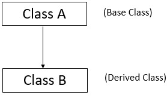
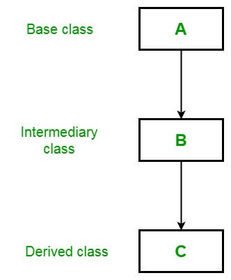
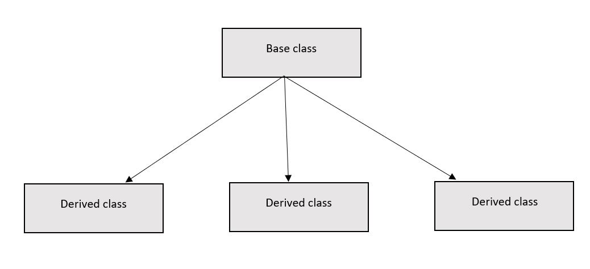

Java Object-Oriented Programming
- What is Procedural Oriented Programing ?
- Procedural programming is a programming paradigm, derived from imperative programming, based on the concept of the procedure call. Procedures (a type of routine or subroutine) simply contain a series of computational steps to be carried out. Any given procedure might be called at any point during a program's execution, including by other procedures or itself. The first major procedural programming languages appeared circa 1957–1964, including Fortran, ALGOL, COBOL, PL/I and BASIC. Pascal and C were published circa 1970–1972.
- What is Object-oriented programming ?
- Object-oriented programming (OOP) is a programming paradigm based on the concept of "objects", which can contain data and code: data in the form of fields (often known as attributes or properties), and code, in the form of procedures (often known as methods). A feature of objects is that an object's own procedures can access and often modify the data fields of itself (objects have a notion of this or self). In OOP, computer programs are designed by making them out of objects that interact with one another. OOP languages are diverse, but the most popular ones are class-based, meaning that objects are instances of classes, which also determine their types.

- Object-oriented programming has several advantages over procedural programming :
- *OOP is faster and easier to execute.
- *OOP provides a clear structure for the programs
- *OOP helps to keep the Java code DRY "Don't Repeat Yourself", and makes the code easier to maintain, modify and debug.
- *OOP makes it possible to create full reusable applications with less code and shorter development time.
The Object Oriented Programming(OOP) concepts of Java are:
- Class
A Class is like an object constructor, or a "blueprint" for creating objects.A class is a user defined blueprint or prototype from which objects are created. It represents the set of properties or methods that are common to all objects of one type.A class can have any number of methods to access the value of various kinds of methods.
Create a Class
To create a class, use the keyword class:
Main.java
Create a class named "Main" with a variable x:
public class Main
{
int x = 5;
}- Objects
In Java, an object is created from a class.It is a basic unit of Object-Oriented Programming and represents the real life entities. A typical Java program creates many objects, which as you know, interact by invoking methods. We have already created the class named MyClass, so now we can use this to create objects. To create an object of MyClass, specify the class name, followed by the object name, and use the keyword new.When an object of a class is created, the class is said to be instantiated. All the instances share the attributes and the behavior of the class. But the values of those attributes, i.e. the state are unique for each object. A single class may have any number of instances.
Example
Create an object called "myObj" and print the value of x:
- public class Main
{
int x = 5;
public static void main(String[] args)
{
Main myObj = new Main();
System.out.println(myObj.x);
}
}
Multiple Objects
You can create multiple objects of one class:
Example
Create two objects of Main:
- public class Main
{
int x = 5;
public static void main(String[] args)
{
Main myObj1 = new Main(); // Object 1
Main myObj2 = new Main(); // Object 2
System.out.println(myObj1.x);
System.out.println(myObj2.x);
}
}
- Inheritance
Inheritance in Java is a mechanism in which one object acquires all the properties and behaviors of a parent object. It is an important part of OOPs (Object Oriented programming system). The idea behind inheritance in Java is that you can create new classes that are built upon existing classes. When you inherit from an existing class, you can reuse methods and fields of the parent class. Moreover, you can add new methods and fields in your current class also. Inheritance represents the IS-A relationship which is also known as a parent-child relationship.
Why use inheritance in java ?
*For Method Overriding (so runtime polymorphism can be achieved).
*For Code Reusability.
The extends keyword indicates that you are making a new class that derives from an existing class. The meaning of "extends" is to increase the functionality. In the terminology of Java, a class which is inherited is called a parent or superclass, and the new class is called child or subclass.
Types of Inheritance
There are Various types of inheritance in Java:
Single Inheritance:
In Single Inheritance one class extends another class (one class only).
Single Inheritance example program in Java
- Class A
{
public void methodA()
{
System.out.println("Base class method");
}
}
Class B extends A
{
public void methodB()
{
System.out.println("Child class method");
}
public static void main(String args[])
{
B obj = new B();
obj.methodA(); //calling super class method
obj.methodB(); //calling local method
}
}
Multilevel Inheritance
Multilevel Inheritance example program in Java
In Multilevel Inheritance, one class can inherit from a derived class. Hence, the derived class becomes the base class for the new class.It’s pretty clear with the diagram that in Multilevel inheritance there is a concept of grand parent class.
- Class X
{
public void methodX()
{
System.out.println("Class X method");
}
}
Class Y extends X
{
public void methodY()
{
System.out.println("class Y method");
}
}
Class Z extends Y
{
public void methodZ()
{
System.out.println("class Z method");
}
public static void main(String args[])
{
Z obj = new Z();
obj.methodX(); //calling grand parent class method
obj.methodY(); //calling parent class method
obj.methodZ(); //calling local method
}
}
Hierarchical Inheritance
In such kind of inheritance one class is inherited by many sub classes. When a class has more than one child classes (sub classes) or in other words more than one child classes have the same parent class then this type of inheritance is known as hierarchical inheritance
Example of Hierarchical Inheritance
We are writing the program where class B, C and D extends class A.
- class A
{
public void methodA()
{
System.out.println("method of Class A");
}
}
class B extends A
{
public void methodB()
{
System.out.println("method of Class B");
}
}
class C extends A
{
public void methodC()
{
System.out.println("method of Class C");
}
}
class D extends A
{
public void methodD()
{
System.out.println("method of Class D");
}
}
class JavaExample
{
public static void main(String args[])
{
B obj1 = new B();
C obj2 = new C();
D obj3 = new D();
//All classes can access the method of class A
obj1.methodA();
obj2.methodA();
obj3.methodA();
}
}
Output:
method of Class A
method of Class A
method of Class A
Question ) Why multiple inheritance is not supported in java?
Answer )To reduce the complexity and simplify the language, multiple inheritance is not supported in java. Consider a scenario where A, B, and C are three classes. The C class inherits A and B classes. If A and B classes have the same method and you call it from child class object, there will be ambiguity to call the method of A or B class. Since compile-time errors are better than runtime errors, Java renders compile-time error if you inherit 2 classes. So whether you have same method or different, there will be compile time error.-
class A
{
void msg()
{
System.out.println("Hello");
}
}
class B
{
void msg()
{
System.out.println("Welcome");
}
}
class C extends A,B
{//suppose if it were
public static void main(String args[]) {
C obj=new C();
obj.msg();//Now which msg() method would be invoked?
}
}
- Polymorphism
Polymorphism in Java is a concept by which we can perform a single action in different ways. Polymorphism is derived from 2 Greek words: poly and morphs. The word "poly" means many and "morphs" means forms. So polymorphism means many forms. There are two types of polymorphism in Java:compile-time polymorphism and runtime polymorphism. We can perform polymorphism in java by method overloading and method overriding. If you overload a static method in Java, it is the example of compile time polymorphism. Here, we will focus on runtime polymorphism in java.
Runtime Polymorphism in Java
Runtime polymorphism or Dynamic Method Dispatch is a process in which a call to an overridden method is resolved at runtime rather than compile-time. In this process, an overridden method is called through the reference variable of a superclass. The determination of the method to be called is based on the object being referred to by the reference variable. Let's first understand the upcasting before Runtime Polymorphism.
Upcasting
If the reference variable of Parent class refers to the object of Child class, it is known as upcasting.
Example:
class A{}
class B extends A{}
A a=new B();//upcasting
For upcasting, we can use the reference variable of class type or an interface type.
For Example:
interface I{}
class A{}
class B extends A implements I{}
Here, the relationship of B class would be:
B IS-A A
B IS-A I
B IS-A Object
Since Object is the root class of all classes in Java, so we can write B IS-A Object.
Example of Java Runtime Polymorphism
In this example, we are creating two classes Bike and Splendor. Splendor class extends Bike class and overrides its run() method. We are calling the run method by the reference variable of Parent class. Since it refers to the subclass object and subclass method overrides the Parent class method, the subclass method is invoked at runtime. Since method invocation is determined by the JVM not compiler, it is known as runtime polymorphism.
- class Bike
{
void run()
{
System.out.println("running");
}
}
class Splendor extends Bike
{
void run(){System.out.println("running safely with 60km");
}
public static void main(String args[])
{
Bike b = new Splendor();//upcasting
b.run();
}
}
Output:
running safely with 60km.
- Abstraction
Data abstraction is the process of hiding certain details and showing only essential information to the user. Abstraction can be achieved with either abstract classes or interfaces.The abstract keyword is a non-access modifier, used for classes and methods:
Abstract class: is a restricted class that cannot be used to create objects (to access it, it must be inherited from another class).
Abstract method: can only be used in an abstract class, and it does not have a body. The body is provided by the subclass (inherited from).
An abstract class can have both abstract and regular methods:
-
abstract class Animal
{
public abstract void animalSound();
public void sleep()
{
System.out.println("Zzz");
}
}
Animal myObj = new Animal(); // will generate an error
To access the abstract class, it must be inherited from another class. Let's convert the Animal class we used in the Polymorphism chapter to an abstract class:
Example
-
// Abstract class
abstract class Animal
{
// Abstract method (does not have a body)
public abstract void animalSound();
// Regular method
public void sleep() {
System.out.println("Zzz");
}
}
// Subclass (inherit from Animal)
class Pig extends Animal
{
public void animalSound()
{
// The body of animalSound() is provided here
System.out.println("The pig says: wee wee");
}
}
class Main
{
public static void main(String[] args)
{
Pig myPig = new Pig(); // Create a Pig object
myPig.animalSound();
myPig.sleep();
}
}
Output
The pig says: wee wee
Zzz
Advantages of Abstraction
*It reduces the complexity of viewing the things.
*Avoids code duplication and increases reusability.
*Helps to increase security of an application or program as only important details are provided to the user.
- Encapsulation
The meaning of Encapsulation, is to make sure that "sensitive" data is hidden from users. To achieve this, you must:
*declare class variables/attributes as private.
*provide public get and set methods to access and update the value of a private variable.
Get and Set
You learned from the previous chapter that private variables can only be accessed within the same class (an outside class has no access to it). However, it is possible to access them if we provide public get and set methods.
The get method returns the variable value, and the set method sets the value.
Syntax for both is that they start with either get or set, followed by the name of the variable, with the first letter in upper case:
Example
- public class Person
{
private String name; // private = restricted access
// Getter
public String getName()
{
return name;
}
// Setter
public void setName(String newName)
{
this.name = newName;
}
}
Example explained
*The get method returns the value of the variable name.
*The set method takes a parameter (newName) and assigns it to the name variable.
*The this keyword is used to refer to the current object.
However, as the name variable is declared as private, we cannot access it from outside this class:
Example
- public class Main
{
public static void main(String[] args)
{
Person myObj = new Person();
myObj.name = "John"; // error
System.out.println(myObj.name); // error
}
}
If the variable was declared as public, we would expect the following output:
John
However, as we try to access a private variable, we get an error:
MyClass.java:4: error: name has private access in Person
myObj.name = "John";
^ MyClass.java:5: error: name has private access in Person
System.out.println(myObj.name);
^ 2 errors
Instead, we use the getName() and setName() methods to acccess and update the variable:
- public class Main
{
public static void main(String[] args)
{
Person myObj = new Person();
myObj.setName("John"); // Set the value of the name variable to "John"
System.out.println(myObj.getName());
}
}
Output: John
Why Encapsulation?
Better control of class attributes and methods Class attributes can be made read-only (if you only use the get method), or write-only (if you only use the set method) Flexible: the programmer can change one part of the code without affecting other parts Increased security of data
- Static Binding
When type of the object is determined at compiled time(by the compiler), it is known as static binding. If there is any private, final or static method in a class, there is static binding.
Example of static binding
- class Dog
{ private void eat()
{
System.out.println("dog is eating...");
}
public static void main(String args[])
{
Dog d1=new Dog();
d1.eat();
}
}
- Dynamic Binding
When type of the object is determined at run-time, it is known as dynamic binding.
Example of dynamic binding
- class Animal
{
void eat()
{
System.out.println("animal is eating...");
}
}
class Dog extends Animal
{
void eat()
{
System.out.println("dog is eating...");
}
public static void main(String args[])
{
Animal a=new Dog();
a.eat();
}
}
In the above example object type cannot be determined by the compiler, because the instance of Dog is also an instance of Animal. So compiler doesn't know its type, only its base type.